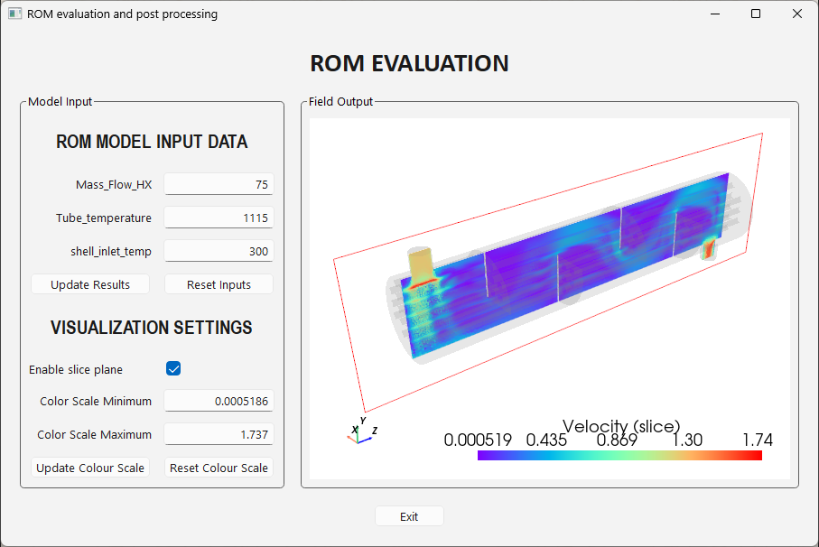

Note
Go to the end to download the full example code.
TBROM interactive visualization GUI application#
This example demonstrates how to build a desktop GUI application that integrates PyTwin with PyVista and PySide6 to provide interactive visualization and real-time evaluation of a TBROM showing flow velocity in a heat exchanger. The application allows users to interactively adjust ROM input parameters and visualize the resulting field outputs on a CFD mesh in real-time.
The GUI features include:
Real-time ROM evaluation with adjustable input parameters
Interactive 3D mesh visualization using PyVista
Cross-sectional slicing of field results
Dynamic color scale adjustment for field visualization
This example is provided as a reference implementation for developers wishing to create interactive TBROM applications.
{kind=link}

# sphinx_gallery_thumbnail_path = '_static/DEPLOY_HX_GUI_app.png'
Warning
This is a GUI application example and is not meant to be executed in batch mode or during documentation generation. The code is provided for reference and should be adapted to your specific use case.
Note
This example uses the same twin runtime and CFD mesh as the 3D field ROM example with CFD mesh based visualization example. Refer to that example for instructions on how to prepare the TBROMs inside the twin for visualization.
Key Requirements:
A Twin file with configured TBROM(s) where output mode coefficients are enabled
PySide6 for the GUI framework
PyVista and PyVistaQt for 3D visualization
(Optional) Ansys DPF - Core and a Fluent case file for CFD mesh conversion if the pre-generated mesh file is not available
Import required modules#
Import PySide6 components for GUI creation, PyTwin for twin evaluation, PyVista for mesh visualization, and associated dependencies.
from pathlib import Path
import sys
from PySide6.QtCore import Qt
from PySide6.QtGui import QDoubleValidator, QFont
from PySide6.QtWidgets import (
QApplication,
QCheckBox,
QGridLayout,
QGroupBox,
QHBoxLayout,
QLabel,
QLineEdit,
QPushButton,
QVBoxLayout,
QWidget,
)
from pytwin import TwinModel, download_file
import pyvista as pv
from pyvistaqt import QtInteractor
Define files and default inputs#
Define the path to the twin file containing the TBROM, the expected path to the CFD mesh file,
and the default ROM input parameters. In this example, the twin file is downloaded from the Ansys file repository,
and the mesh file is expected to be in the ../other_files directory relative to the twin file parent directory.
TWIN_FILE = Path(download_file("HXVelVectorTBROM_23R2.twin", "twin_files", force_download=True))
MESH_FILE = TWIN_FILE.parent.parent.joinpath("other_files", "HX_CFD.vtk") # Expect HX_CFD.vtk in ../other_files
DEFAULT_INPUTS = {"Mass_Flow_HX": 75.0, "Tube_temperature": 1115.0, "shell_inlet_temp": 300.0}
DEFAULT_ROM_NAME = "test1"
Mesh creation utility (optional dependency)#
This utility function converts an Ansys Fluent case file (.cas) to a generic VTK mesh format.
It is only called if the pre-generated MESH_FILE is not found. This function requires
Ansys DPF - Core as an optional dependency. For installation instructions, refer to the
3D field ROM example with CFD mesh based visualization example.
def convert_cfd_file_to_mesh(mesh_file: Path, named_selections: list[str]) -> None:
"""Utility function to convert a CFD file to a generic VTK mesh file."""
import importlib.metadata
try:
import ansys.dpf.core as dpf
except ImportError as e:
raise RuntimeError("Optional dependency missing: ansys.dpf.core. " "Install to enable mesh conversion.") from e
cfd_file = download_file("HX_CFD.cas.h5", "other_files", force_download=True)
ds = dpf.DataSources()
ds.set_result_file_path(cfd_file, "cas")
streams = dpf.operators.metadata.streams_provider(data_sources=ds)
model = dpf.Model(data_sources=ds)
minfo = model.metadata.mesh_info
zone_names_vec = minfo.get_property("zone_names")
zone_ids = zone_names_vec.scoping.ids
zone_names = list(zone_names_vec.data)
ids = [int(zone_ids[zone_names.index(name)]) for name in named_selections if name in zone_names]
# extracting the individual grid associated to each named selection and merging all of them in 1 single grid
whole_mesh = dpf.operators.mesh.meshes_provider(streams_container=streams, region_scoping=ids).eval()
# Note: depending on the version of vtk package installed, the merge order will be different
# (see https://docs.pyvista.org/api/utilities/_autosummary/pyvista.merge.html)
vtk_version = importlib.metadata.version("vtk")
if vtk_version >= "9.5.0":
target_mesh = whole_mesh[0].grid
target_mesh = target_mesh.merge([whole_mesh[i].grid for i in range(1, len(ids))])
else:
target_mesh = whole_mesh[-1].grid
target_mesh = target_mesh.merge([whole_mesh[i].grid for i in range(0, len(ids) - 1)])
target_mesh.save(mesh_file)
Main GUI Application Window#
The MainWindow class creates the main application window and manages:
Twin Model Loading: Initializes the PyTwin model for TBROM evaluation
Mesh Initialization: Loads the CFD mesh and performs initial ROM projection
PyVista Visualization: Sets up the 3D visualization plotter
User Interface: Builds the GUI with input controls, visualization settings, and 3D view
The application allows users to:
Adjust ROM input parameters in real-time
Update ROM evaluation and visualize results immediately
Control the color scale for field visualization
View the ROM results as a 3D mesh with toggleable cross-sectional slice down the centerline of the heat exchanger.
The core PyTwin functionalities demonstrated in this application are included in the following methods:
MainWindow._initialize_twin(): Loading a twin model and initializing evaluation with specified inputsMainWindow._initialize_mesh(): Projecting TBROM results onto a target mesh for visualizationMainWindow._run_evaluation(): Updating the twin evaluation with new input parameters and refreshing the visualization
class MainWindow(QWidget):
def __init__(self) -> None:
super().__init__()
self._data_range = (0.0, 1.0)
self._slice = True
self._initialize_twin()
self._initialize_plotter()
self._initialize_mesh()
self._build_gui()
self._on_slice_toggled(self._slice) # Set initial visibility based on slice mode
self._reset_color_scale() # Set initial color scale to data range
# The functions below use the PyTwin APIs in various ways to access and manipulate the twin model.
def _initialize_twin(self) -> None:
"""
Initialize the twin model.
Use PyTwin APIs to instantiate the twin model from the specified twin file and run the initialization step with
selected inputs.
"""
print("Loading model: {}".format(TWIN_FILE))
self._twin_model = TwinModel(TWIN_FILE)
self._set_default_inputs()
self._get_tbrom_metadata()
self._twin_model.initialize_evaluation(inputs=self._default_inputs)
def _set_default_inputs(self):
"""
Set the default inputs for the twin model.
Use the PyTwin API to retrieve the current twin inputs and then override some or all of them with the values
defined in DEFAULT_INPUTS.
"""
if self._twin_model.evaluation_is_initialized:
print("WARNING: Evaluation already initialized, using current twin inputs as default values.")
self._default_inputs = self._twin_model.inputs.copy()
for name, value in DEFAULT_INPUTS.items():
if name in self._default_inputs:
self._default_inputs[name] = value
def _get_tbrom_metadata(self):
"""
Get metadata for TBROMs in the twin model.
Use PyTwin APIs to get information about what TBROMs are available in the twin, their associated field output
names, and the dimensions of those outputs.
"""
if self._twin_model.tbrom_count == 0:
raise ValueError("No TBROMs found in the twin model.")
self._tbrom_rom_names = self._twin_model.tbrom_names
self._current_rom_name = (
DEFAULT_ROM_NAME if DEFAULT_ROM_NAME in self._tbrom_rom_names else self._tbrom_rom_names[0]
)
self._field_output_names = {
name: self._twin_model.get_field_output_name(name) for name in self._tbrom_rom_names
}
self._current_field_output_name = self._field_output_names[self._current_rom_name]
self._field_output_dims = {
name: self._twin_model._tbroms[name].field_output_dim for name in self._tbrom_rom_names
}
self._current_field_output_dim = self._field_output_dims[self._current_rom_name]
def _initialize_mesh(self) -> None:
"""
Initialize the mesh for visualization.
Use PyTwin API to project TBROM results onto a target mesh.
The projected mesh is a PyVista UnstructuredGrid whose coordinates correspond to the target mesh and whose
scalar values correspond to the TBROM field output. The scalar values automatically update when the twin is
re-evaluated with new inputs.
"""
print("Loading mesh: {}".format(MESH_FILE))
if not MESH_FILE.is_file():
print("Mesh file not found. Converting CFD file to mesh...")
convert_cfd_file_to_mesh(MESH_FILE, self._twin_model.get_named_selections(self._current_rom_name))
# Get the TBROM results projected onto the target mesh. The interpolate argument is set to False since the CFD
# mesh is the same as that used to create the ROM.
target_mesh = pv.read(MESH_FILE)
print("Performing initial mesh projection...")
self._rom_on_target_mesh = self._twin_model.project_tbrom_on_mesh(
self._current_rom_name, target_mesh, interpolate=False
)
# Choose which component to plot based on the field output dimension.
if self._current_field_output_dim == 1:
# Plot the field directly for scalar outputs
self._scalar_to_plot = self._current_field_output_name
self._component = None
elif self._current_field_output_dim == 3:
# Plot the magnitude for vector outputs
self._scalar_to_plot = self._current_field_output_name + "-normed"
self._component = None
else:
# For anything else, plot the first component.
self._scalar_to_plot = self._current_field_output_name
self._component = 1
# Define an interactive slice through the projected ROM results.
# Add a semi-transparent version of the full mesh to display geometry when sliced.
self._background_mesh_actor = self._plotter.add_mesh(
target_mesh, color="grey", opacity=0.1, name="background_mesh", render=False
)
# Add the slice on YZ plane
self._slice_data_actor = self._plotter.add_mesh_slice(
self._rom_on_target_mesh,
assign_to_axis="x",
origin_translation=False,
outline_translation=False,
outline_opacity=False,
show_edges=False,
name="slice_mesh",
scalars=self._scalar_to_plot,
component=self._component,
cmap="rainbow",
show_scalar_bar=False,
render=False,
)
title = self._current_field_output_name + " (slice)"
self._slice_scalar_bar = self._plotter.add_scalar_bar(title=title, color="black")
self._plane_slice_widget = self._plotter.plane_widgets[-1]
# Define the full mesh for the projected ROM results
self._full_mesh_actor = self._plotter.add_mesh(
self._rom_on_target_mesh,
show_edges=False,
name="full_mesh",
scalars=self._scalar_to_plot,
component=self._component,
cmap="rainbow",
show_scalar_bar=False,
render=False,
)
title = self._current_field_output_name + " (full mesh)"
self._full_mesh_scalar_bar = self._plotter.add_scalar_bar(title=title, color="black")
self._plotter.reset_camera()
def _run_evaluation(self) -> None:
"""
Run the twin evaluation with input parameters from the GUIand refresh the visualization.
Assumes that TBROM is a static ROM, so uses the PyTwin `initialize_evaluation` method to re-run the evaluation
with new inputs.
"""
rom_inputs = {name: float(edit.text()) for name, edit in self._input_edits.items()}
self._twin_model.initialize_evaluation(inputs=rom_inputs)
# PyTwin resets active scalars to TBROM field name after re-evaluation, so revert to chosen quantity.
self._full_mesh_actor.mapper.dataset.set_active_scalars(self._scalar_to_plot)
self._plotter.update()
# The functions below use PyVista APIs to manage the 3D visualization of the TBROM results on the mesh.
def _initialize_plotter(self) -> None:
"""Initialize the PyVistaQT plotter for 3D visualization."""
self._plotter = QtInteractor(parent=self)
self._plotter.clear()
self._plotter.add_axes()
self._plotter.view_zy()
def _reset_inputs(self) -> None:
"""Reset the input parameters to their default values and re-evaulate model."""
for name, value in self._default_inputs.items():
edit = self._input_edits[name]
edit.setText(f"{value:.4g}")
edit.setCursorPosition(0)
self._run_evaluation()
def _update_color_scale(self) -> None:
"""Update the color scale of the visualization."""
vmin = float(self._scale_edits["Color Scale Minimum"].text())
vmax = float(self._scale_edits["Color Scale Maximum"].text())
self._data_range = (vmin, vmax)
self._plotter.update_scalar_bar_range(self._data_range, self._active_scalar_bar.title)
self._plotter.update()
def _reset_color_scale(self) -> None:
"""Reset the color scale to the current data range of the field output."""
self._data_range = self._active_data_mapper.dataset.get_data_range()
self._scale_edits["Color Scale Minimum"].setText(f"{self._data_range[0]:.4g}")
self._scale_edits["Color Scale Maximum"].setText(f"{self._data_range[1]:.4g}")
self._update_color_scale()
def _on_slice_toggled(self, checked: bool) -> None:
"""Handle slice plane state changes."""
self._slice = checked
# Toggle visibility, depending on whether slice mode is enabled.
self._plane_slice_widget.SetEnabled(checked)
for actor in [self._full_mesh_actor, self._full_mesh_scalar_bar]:
actor.visibility = not checked
for actor in [self._slice_data_actor, self._slice_scalar_bar, self._background_mesh_actor]:
actor.visibility = checked
self._active_data_mapper = self._slice_data_actor.mapper if checked else self._full_mesh_actor.mapper
self._active_scalar_bar = self._slice_scalar_bar if checked else self._full_mesh_scalar_bar
self._plotter.update()
# The functions below use PySide6 APIs to build the GUI layout and manage user interactions.
def _build_gui(self) -> None:
"""Build the GUI layout and components."""
self.setWindowTitle("ROM evaluation and post processing")
title = QLabel("ROM EVALUATION")
title.setAlignment(Qt.AlignCenter)
title.setFont(QFont("Calibri", 22, QFont.Bold))
left_group = self._build_left_group()
right_group = self._build_right_group()
body_row = QHBoxLayout()
body_row.addWidget(left_group, stretch=1)
body_row.addWidget(right_group, stretch=2)
buttons_row = self._build_buttons_row()
layout = QVBoxLayout()
layout.setContentsMargins(20, 20, 20, 20)
layout.setSpacing(16)
layout.addWidget(title)
layout.addLayout(body_row)
layout.addLayout(buttons_row)
self.setLayout(layout)
def _build_left_group(self) -> QGroupBox:
"""Build the left group box containing model input and visualization settings."""
self._input_edits = {}
self._scale_edits = {}
validator = QDoubleValidator(self)
validator.setNotation(QDoubleValidator.StandardNotation)
group = QGroupBox("Model Input")
# Inputs section
header = QLabel("ROM MODEL INPUT DATA")
header.setAlignment(Qt.AlignCenter)
header.setFont(QFont("Arial Narrow", 16, QFont.Bold))
row = 0
grid = QGridLayout()
grid.setHorizontalSpacing(12)
grid.setVerticalSpacing(10)
grid.addWidget(header, row, 0, 1, 2)
# input fields
row += 1
for name, value in self._default_inputs.items():
label = QLabel(name)
label.setAlignment(Qt.AlignRight | Qt.AlignVCenter)
edit = QLineEdit(f"{value:.4g}")
edit.setAlignment(Qt.AlignRight)
edit.setValidator(validator)
edit.setCursorPosition(0)
grid.addWidget(label, row, 0)
grid.addWidget(edit, row, 1)
self._input_edits[name] = edit
row += 1
run_button = QPushButton("Update Results")
run_button.setObjectName("runButton")
run_button.clicked.connect(self._run_evaluation)
grid.addWidget(run_button, row, 0)
reset_inputs_button = QPushButton("Reset Inputs")
reset_inputs_button.setObjectName("resetInputsButton")
reset_inputs_button.clicked.connect(self._reset_inputs)
grid.addWidget(reset_inputs_button, row, 1)
row += 1
# Visualization section
visual_header = QLabel("VISUALIZATION SETTINGS")
visual_header.setAlignment(Qt.AlignCenter)
visual_header.setFont(QFont("Arial Narrow", 16, QFont.Bold))
grid.addWidget(visual_header, row, 0, 1, 2)
row += 1
# Slice plane controls
label = QLabel("Enable slice plane")
label.setAlignment(Qt.AlignLeft | Qt.AlignVCenter)
grid.addWidget(label, row, 0)
self._slice_toggle = QCheckBox()
self._slice_toggle.setChecked(self._slice)
self._slice_toggle.toggled.connect(self._on_slice_toggled)
grid.addWidget(self._slice_toggle, row, 1)
row += 1
# Colour scale controls
for name, value in zip(("Color Scale Minimum", "Color Scale Maximum"), self._data_range):
label = QLabel(name)
label.setAlignment(Qt.AlignRight | Qt.AlignVCenter)
edit = QLineEdit(f"{value:.4g}")
edit.setAlignment(Qt.AlignRight)
edit.setValidator(validator)
edit.setCursorPosition(0)
grid.addWidget(label, row, 0)
grid.addWidget(edit, row, 1)
self._scale_edits[name] = edit
row += 1
scale_button = QPushButton("Update Colour Scale")
scale_button.setObjectName("scaleButton")
scale_button.clicked.connect(self._update_color_scale)
grid.addWidget(scale_button, row, 0)
reset_plot_button = QPushButton("Reset Colour Scale")
reset_plot_button.setObjectName("resetPlotButton")
reset_plot_button.clicked.connect(self._reset_color_scale)
grid.addWidget(reset_plot_button, row, 1)
row += 1
group.setLayout(grid)
return group
def _build_right_group(self) -> QGroupBox:
"""Build the right group box containing the field output visualization."""
group = QGroupBox("Field Output")
layout = QVBoxLayout()
layout.addWidget(self._plotter)
group.setLayout(layout)
return group
def _build_buttons_row(self) -> QHBoxLayout:
"""Build the bottom row of buttons."""
layout = QHBoxLayout()
layout.addStretch(1)
exit_button = QPushButton("Exit")
exit_button.setObjectName("exitButton")
exit_button.clicked.connect(self.close)
layout.addWidget(exit_button)
layout.addStretch(1)
return layout
Launch the application#
Define the entry point for the GUI application. When run as a script, this creates and displays the main application window, allowing interactive exploration of the TBROM model.
Usage and extension ideas#
To run this application as a standalone script:
python 00-DEPLOY_HX_GUI_app_no_execute.py
This will launch the GUI application window with:
Left panel: ROM input parameters and visualization settings
Right panel: 3D PyVista visualization of the TBROM field
Typical workflow:
Adjust one or more ROM input parameters (e.g.,
Mass_Flow_HX,Tube_temperature,shell_inlet_temp).Click “Update Results” to re-evaluate the ROM and update the visualization. Click “Reset Inputs” to revert to initial inputs.
Optionally adjust the “Color Scale Minimum” and “Color Scale Maximum” and click “Update Colour Scale” to better visualize the data range. Click “Reset Colour Scale” to reset the color scale to the current visible data range.
Use the 3D view to interact with the mesh (rotate, zoom, pan).
Click “Exit” to close the application
Potential extensions:
Replace the mesh file with a lower resolution version for faster visualization.
Add support for twins with multiple TBROMs.
Add support for visualizing different components of vector fields.
Add support for additional field visualization options (streamlines, contours, etc.)
Add support for loading different twin and mesh files at runtime.